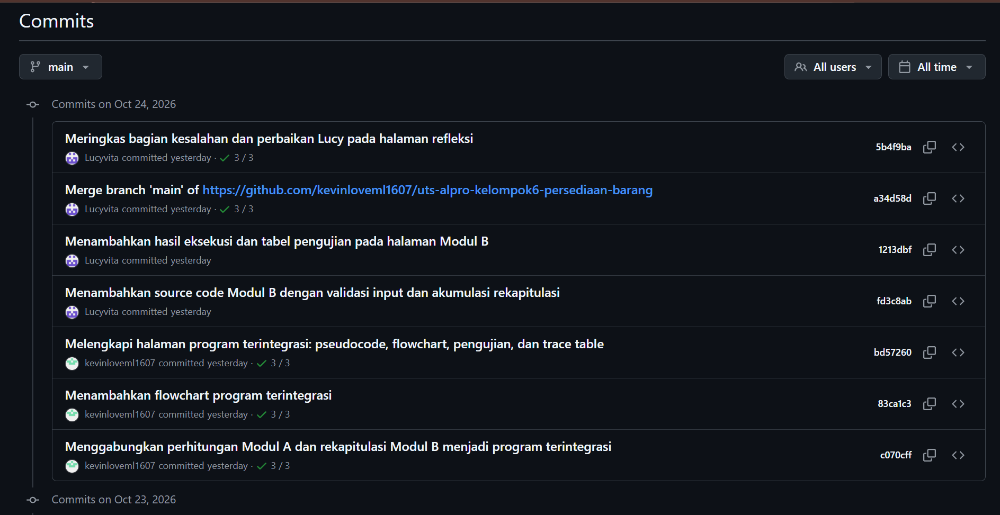
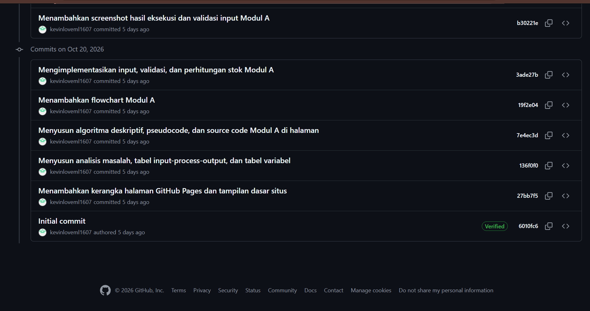
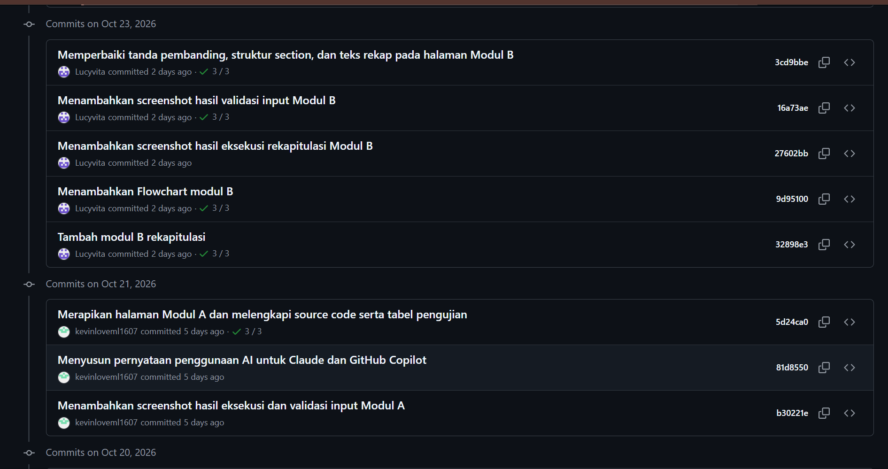

Kelompok 6
Refleksi
Pembagian Pekerjaan
| Anggota | NIM | Modul/Tugas | Bagian yang dikerjakan |
|---|---|---|---|
| Kevin Sebastian Liem | 322610006 | Modul A | Membuat flowchart Modul A, menulis source code C++ Modul A, dan menyusun halaman Modul A (modul-a.html) pada GitHub Pages. |
| Lucy Filipini Vita Katarina | 322610008 | Modul B | Membuat flowchart Modul B, menulis source code C++ Modul B, dan menyusun halaman Modul B (modul-b.html) pada GitHub Pages. |
Kontribusi Anggota
| No. | Nama Anggota Kelompok | Kontribusi Anggota |
|---|---|---|
| 1. | Kevin Sebastian Liem | Modul A (proses utama): input dan validasi data barang, perhitungan stok akhir, penentuan status, perhitungan jumlah dan biaya pemesanan, serta tampilan rincian barang. |
| 2. | Lucy Filipini Vita Katarina | Modul B (rekapitulasi): akumulasi jumlah barang per status, total terjual, total unit dipesan, total biaya pemesanan, dan penentuan barang dengan penjualan tertinggi. |
Bagian Tersulit
Kevin Sebastian Liem
Bagian tersulit adalah memahami dan memperbaiki beberapa bagian kode Modul A, serta memasukkan flowchart dan hasil eksekusi ke GitHub Pages. Juga sempat mengalami sedikit kesulitan dalam menulis kode.
Lucy Filipini Vita Katarina
Bagian tersulit adalah memahami dan memperbaiki beberapa bagian kode Modul B, menyusun halaman HTML Modul B, dan mengubah flowchart beberapa kali agar sesuai dengan alur program. Juga mengalami kesulitan dalam menulis kode.
Kesalahan dan Perbaikan
Kevin Sebastian Liem
Terdapat kesalahan pada flowchart Modul A sehingga alurnya belum sesuai dengan program. Flowchart kemudian diperbaiki beberapa kali sampai sesuai, dan beberapa bagian kode Modul A ikut diperbaiki.
Lucy Filipini Vita Katarina
Flowchart Modul B direvisi beberapa kali agar sesuai dengan pseudocode dan source code. Validasi input pada kode disesuaikan dengan gaya Modul A supaya program tidak berhenti saat menerima input yang salah. Pada halaman HTML, tanda < dan > yang hilang karena terbaca sebagai tag diperbaiki dengan menuliskannya sebagai < dan >, dan struktur card yang ganda dirapikan.
Pengetahuan yang Diperoleh
Kevin Sebastian Liem
Kevin Sebastian Liem memahami cara menggunakan GitHub Pages, cara menulis kode, serta cara memasukkan gambar flowchart dan hasil eksekusi ke GitHub Pages. Dan belajar bekerja sama dengan AI sebagai asisten ketika mengalami kesulitan, sambil tetap memeriksa hasilnya.
Lucy Filipini Vita Katarina
Lucy Filipini Vita Katarina belajar menulis kode C++ dengan percabangan, perulangan, dan validasi input, menyusun halaman dengan HTML untuk GitHub Pages, serta membuat flowchart yang konsisten dengan algoritma, pseudocode, dan source code.
Rencana Pengembangan UAS
Pada tahap UAS, program dapat dikembangkan dengan menggunakan array dan function agar data barang dapat disimpan dan diproses ulang tanpa harus mengulang input. Program juga dapat ditambah fitur penyimpanan data ke file, pencarian barang berdasarkan kode, dan urutan barang berdasarkan penjualan. Kedua modul dapat digabung dalam satu program yang lebih terstruktur dengan pembagian function yang jelas.
Bukti Contributor GitHub
Riwayat commit pada repository kelompok menunjukkan bahwa kedua anggota mengirimkan commit secara bertahap.

Riwayat commit 24 Oktober 2026.

Riwayat commit 21 dan 23 Oktober 2026.

Riwayat commit 20 Oktober 2026 sampai commit awal repository.